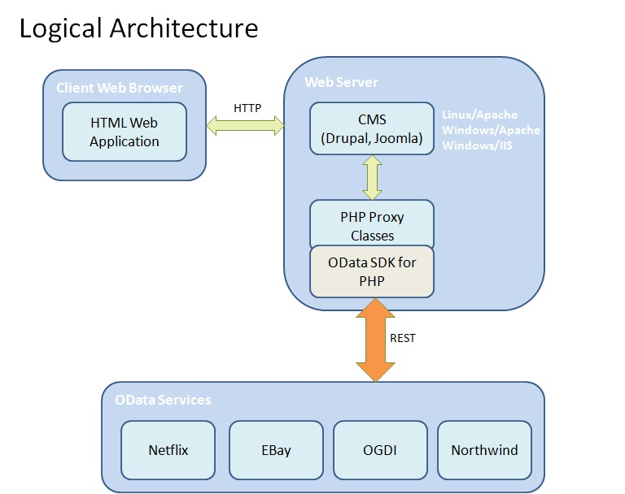

Allows PHP developers to access data services that use the OData protocol in their content pages.
Project Details
The OData Module allows Drupal users to embed data exposed through the Open Data Protocol (OData) in their content pages.
Users can include data from Netflix (http://odata.netflix.com/catalog), Open Government Data Initiative (http://ogdi.cloudapp.net/v1),
ebay (http://ebayodata.cloudapp.net) and other OData publishers. A full list of OData services is available on the Producers page of the OData web site.
This module works on Drupal 7 version. It uses the OData
SDK for PHP available here.
The module is supported on Internet Explorer 8.0, Google Chrome 8.0 and Mozilla Firefox 3.6 browsers.
Technologies
PHP, OData, REST
Contributors
Mindtree Limited
License
This software is released free of charge under the terms of the GNU General Public License v2.
The license document is available here.
Download
The latest version of the OData Drupal module can be downloaded from the
project site.
Installation
The installation and usage guide for OData Drupal Module can be found here.
Architecture

The OData SDK for PHP is used to generate a proxy class from the metadata exposed by an OData Producer.
These proxy classes are then used by the Drupal module to connect and browse records from the Data Service.